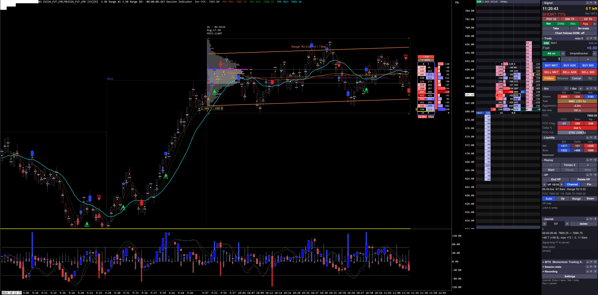

A custom trading interface built entirely inside Sierra Chart – only with the official ACSIL study interface, no external program, no rebuild of other software. Click a highlighted area to see what it does – including the journal that turns every trade idea into a case.
Questions beyond the tour? Download the MTS AI guide (Markdown) and add it to a chat with Claude or another AI assistant – then ask anything about MTS. Or give the assistant this link: chrislb-trading.github.io/mts-tour/llms.txt
